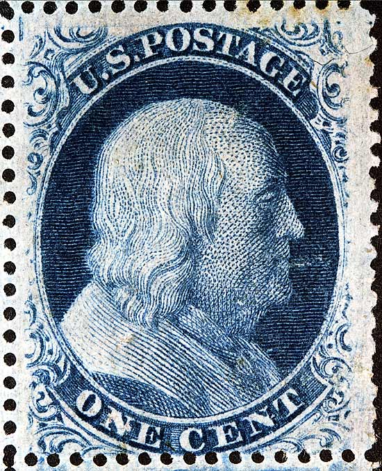
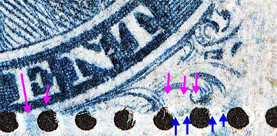

1¢ Franklin Issue of 1857-1861, PLATE 10 Pos 5L10, (Scott #24) |
| Scott #24 Blue, Type V, Relief A Issued only Perforate. A block of 4 consisting of Positions 4L10, 5L10, 14L10 and 15L10. The violet arrows shown below are marks of interest that at this time have not been confirmed reliable or constant. Neinken plating diagrams indicate that this position has no plating marks. |
|  |
| FIGURE 1. (Below) The blue arrows point out a faint blurry horizontal line extending to the remains of the right plume. The violet arrows to the right indicate a sharp horizontal line. This feature can be seen in another impression here. The violet arrows pointing to the blurs under the "E" of CENT can be an aid to plating. Similar marks like these can be found on ther positions.  |
| DISCLAIMER and COPYRIGHT INFORMATION: Thanks for visiting this site. I hope you learn something new as we are making new discoveries all the time. You, the visitor, have my permission to link to my pages and to share the INFORMATION with others. The images themselves fall under the fair use guidelines established by the United States Congress and Copyright law. Basically contact us before using. I also ask in return that you send me an e-mail if I have made a mistake, or have made some other technical blunder that in my rush to put these pages up would cause the visitor confusion. Please also visit my other website at www.slingshotvenus.com. and support the live music arts. While your there, be sure to purchase our music. There are not many philatelic rock stars around and we need all the help we can get. :-) I can be reached at: nerdman@ix.netcom.com |